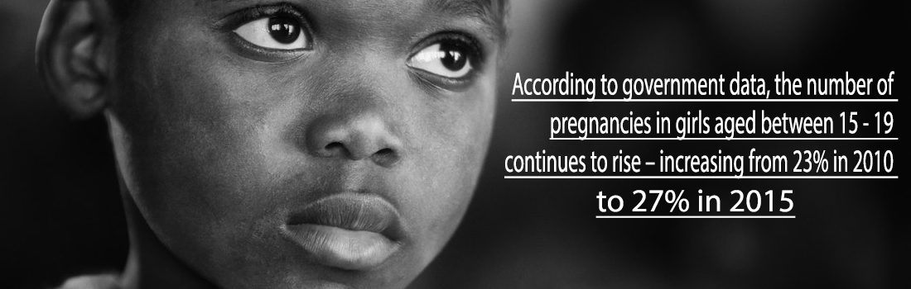
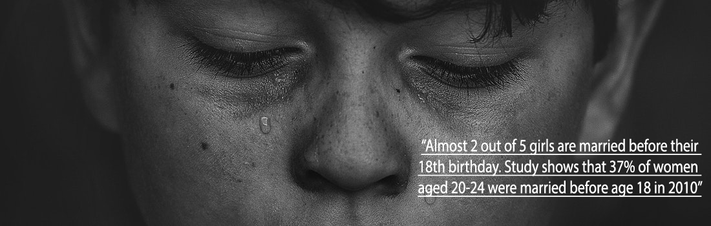

From the recently released Tanzania Demographic and Health Survey (TDHS 2015/2016) report teenage pregnancy prevalence rate in Tanzania have risen from 24% in 2010 to 27% in 2015/2016, with Katavi region leading by 45% prevalence rate. From State of Human Rights Report released in May, 2017 by Legal and Human Rights Centre (LHRC) it shows that Tanzania is among the leading countries on the issue of teenage pregnancy in Eastern Africa and is the 3rd in Africa.
Teenage pregnancy is caused by lack of enough knowledge on reproductive health among young girls, forcing young girls into child marriage being one of the factor to persistence of this tragedy. Early pregnancies are impeding girls’ progress and perpetuating gender inequality in our societies especially when young mothers are required to dropout from school immediately after they are found pregnant.
Tanzania is among countries in Sub-Saharan Africa facing “Multiple†consequences of Child Marriage, on average almost 2 out of 5 girls are married before their 18th birthday. Study shows that 37% of women aged 20-24 were married before age 18 in 2010. While child marriage is common in Tanzania, some regions are more vulnerable than others. Evidence shows that the prevalence of child marriage in Tanzania is highest in Shinyanga (59%), followed by Tabora (58%), Mara (55%), Dodoma (51%) and Lindi (48%).
UNFPA report reveals that 1 in every 3 girls is married before reaching 18 and 1 in 9 girls is married under age of 15 and this being due to persistent poverty and gender inequality in communities. Child marriage problem threatens girls’ access to education; good health limits their future economic prospects.
Child marriage disproportionately affects girls in both biological and social aspects as it makes them more vulnerable to sexually transmitted infections (STIs), child-bearing complications and domestic violence. It also undermines access to education – limiting girls’ life opportunities, ability and confidence to make informed decisions about their lives. Through various activities YSMF advocate and create awareness on ending child marriage and teenage pregnancy prevention in Tanzania.Â
